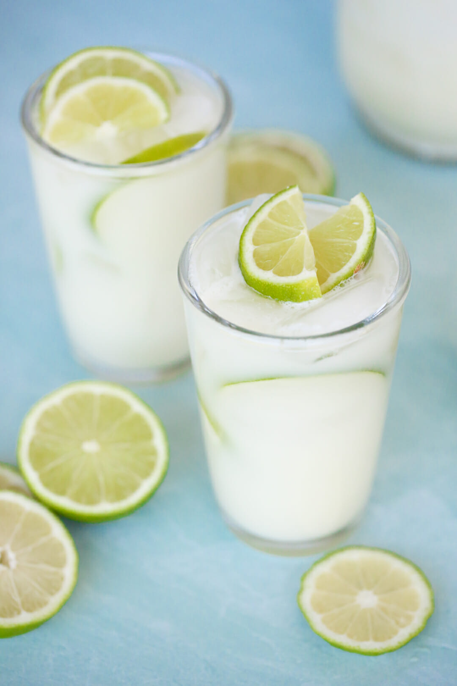

Brazilian Lemonade
Brazilian Lemonade

The first question that people generally ask about Brazilian Lemonade is why it’s called lemonade when it’s actually made with limes?? In Brazil, lemons are not common. Their word for lemonade, “Limonada” actually refers to limes. And in Brazil, they actually call this beverage Swiss Lemonade. This is because the signature ingredient there, Nestle brand sweetened condensed milk, shows a Swiss milkmaid on the label. So. We’ve got Brazilian lemonade, which they call Swiss Lemonade, which is actually limeade. Got it? All you need to know is that it’s DELICIOUS.
Ingredients
- 4 juicy limes
- 1 cup granulated sugar
- 6 cups cold water
- 6 tablespoons sweetened condensed milk, if you need dairy free option you can use coconut creme/milk.
Steps
- Mix cold water and sugar very well and chill until ready to use. This step can be done ahead of time.
- Wash limes thoroughly with soap (hand-dishwashing soap or regular hand soap works great). Cut the ends off the limes and then cut each lime into 8ths.
- Place 1/2 of the limes in your blender.
- Add 1/2 of the sugar water, place the lid on your blender, and pulse about 5 times. Place a fine-mesh strainer over a pitcher (the one you'll serve the lemonade in) and pour the blended mixture through the strainer and into the pitcher. Use a spoon to press the rest of the liquid into the pitcher. Dump the pulp and stuff in the strainer into the trash. Repeat with remaining limes and sugar water.
- Add sweetened condensed milk and stir. You may want to taste test it at this point; Sometimes if you use bitter limes, it will need more sugar and maybe a little more milk. *In Brazil, they will actually place the lime liquid back into the blender to blend the sweetened condensed milk in- this creates kind of a frothy consistency that's super good! Feel free to do this, or simply stir the milk in as directed in this recipe.
- Serve immediately over lots of ice. This does not keep well, so don't make this in advance (although you can cut the limes, mix the sugar water, and measure the sweetened condensed milk in advance).
Notes
Serves 4, technically, although I can pretty much guarantee you that people will want more. You can double, triple, etc. the recipe. Just make in batches that will fit in your blender.